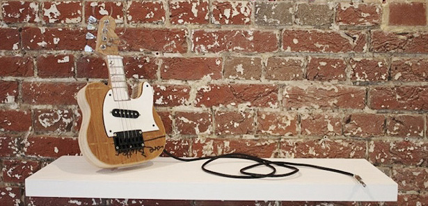
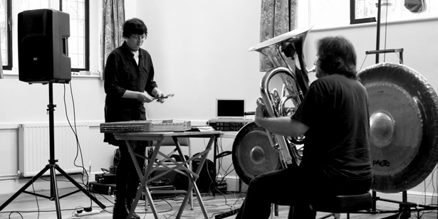

Our final If Wet of the season is fast approaching; SATURDAY 30th November, 5.30pm – 11pm. Note: slight delay in starting due to a bouncy castle.
For our final event we have a much extended offering, on a Saturday, so people can join us in celebrating our first season. By coming to this special fundraising event you will be helping to make our second season happen.
There will be presentations and discussion, much like a normal If Wet, but this event will feature musical performances more centrally.
JOIN US for a night of sonic exploration and wonderment >> Tickets here
Line-up:
Sarah Angliss / Isle of Everywhere / ORE / Nimzo-Indian / Soundhog (DJ) / MortonUnderwood
MortonUnderwood

Your every faithful hosts, MortonUnderwood will welcome you to the final If Wet of the season with a smile – all being well. The evening will start with some time for guests (new and old) to mingle and settle into the space and pace of the village hall – and explore the various goodies in the fundraising auction etc. We will then present a celebratory review of the previous events before moving on to showcase stuff that will feature in the fundraising auction. Then, the latest presentation of work by MortonUnderwood.
Nimzo-Indian

Next up there will be a presentation and live performance by Nimzo-Indian, an alter-ego of artist and technologist Fatsuma. Andy will discuss his work and present four mini guitars he has built, before going on to deliver an unpredictable performance with them.
At this point we’ll break for some refreshments. Hot food and drinks will be provided, as will cakes, snacks, wine, local ale and soft drinks.
ORE

With your belly full of grub, ease into a satiated transcendental state with a live set from drone doom tuba duo ORE. Again there will be a brief discussion about their ethos and working method ahead of the performance.
Isle of Everywhere

After ORE we are delighted to welcome back a band that were at our inaugural If Wet in April, the wonderful Isle of Everywhere (duo). They feature Stuart on tuba (if he has any puff left after playing with ORE) and Simon on santur. A rare combination; together in dub. Note: this is a duo performance without Lydia on drums.
Sarah Angliss

Our last live act of the evening is Sarah Angliss. Her last appearance at If Wet was a delight to behold and we are very pleased to welcome her back; only this time the emphasis will be much more on performance rather than discussion of working methods – although there will be a element of that too!
Soundhog

The rest of the evening will be spent celebrating and discussing, to a soundtrack provided by Soundhog.
We are not really sure what more we can do to entice you to our village hall; it should be a really distinctive experience. Step out of your world and into ours for a night.
We hope to see you at Callow End Village Hall on Saturday the 30th November at 5pm! Tickets on the door, £14. Or we have a few other ticket options available on-line